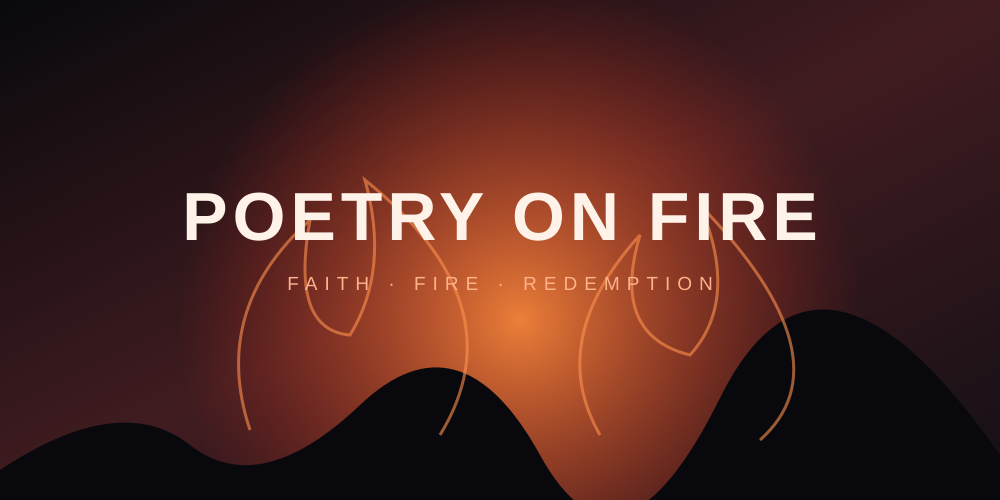

The band's history
Meet the musicians and learn how their experience and faith shape their music.
Read historyChristian alternative rock / metalcore
Heavy music. Honest stories. A message of faith and restoration.
Discover the storyExplore the songsThe sound
From Cape Girardeau, Missouri, Poetry On Fire combines soaring melodies, hard-hitting breakdowns, and atmospheric textures. Their lyrics explore brokenness, identity, redemption, and hope.
This student fan site celebrates the band's sound and introduces a few standout releases.

Explore
Meet the musicians and learn how their experience and faith shape their music.
Read historyExplore a selection of the band's songs, from Fallen Away to Flowers Still Fade.
See top songs